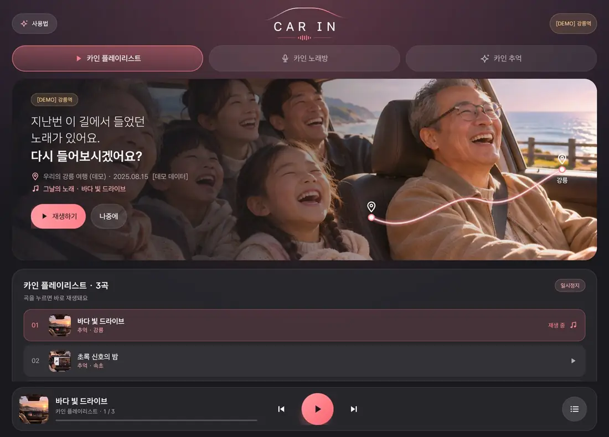
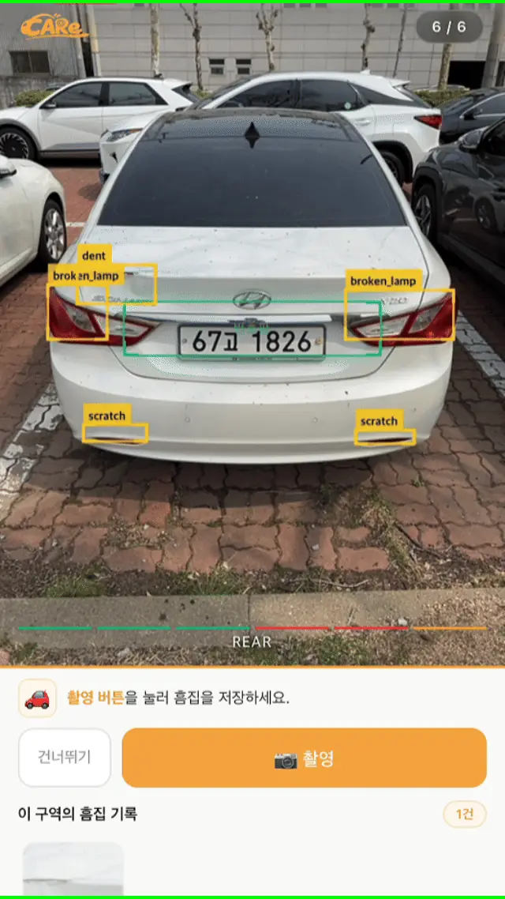
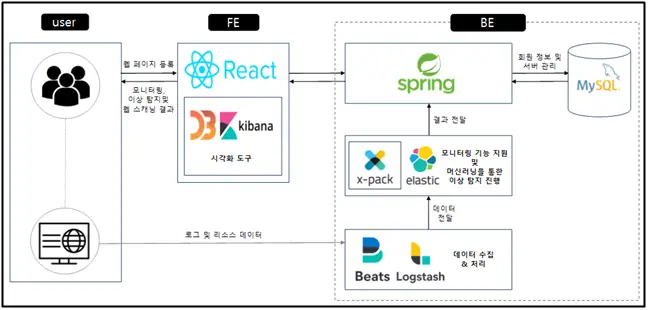
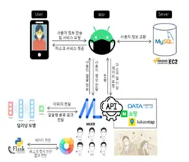

Today's Chicken
오늘 튀겨 낸 프로젝트
마음에 드는 치킨을 골라 레시피를 열어 보세요.팜피 운영 어드민
오손도손
CarryPorter
SSAFY 실습코치
Side Menu
곁들이면 더 맛있는 프로젝트

CAR IN ↗Android 기획·개발 전체, 차량 SDK 연동
CARe ↗YOLO 추론 연동, 업체 웹앱, 예약 백엔드
서버 이상탐지 ↗React 모니터링 화면, PDF 보고서, 배포
마스크 추천 앱Kotlin 진단 화면, Python 분석 연동Order Ticket
이 업무엔 이 치킨
AI·IT개발 업무 5가지를 제가 직접 해 본 경험과 연결했습니다.- AI 도구를 활용한 백엔드·프론트엔드·앱 개발CarryPorter · 팜피 · CAR IN
- 팀 내 행정·업무 지원/menu 업무 자동화 유사 경험
- 클라우드 서버 운영·관리오손도손 인프라
- 사내 업무 시스템 개발·운영팜피 운영 어드민
- 협업 및 일정·품질 관리실습코치 · 팀장 유사 경험
합계업무 개선 → 서비스 개발 → 안정적 운영 → 협업
Ingredients
바삭함의 재료
백엔드
Java, Spring Boot, Spring Security, FastAPI, MySQL, Redis
프론트·앱
Vue.js, React, TypeScript, Android(Java, Kotlin)
클라우드·운영
AWS EC2, Docker, Jenkins, Nginx, Linux, Grafana, Loki, Prometheus
AI·자동화
Python, N-gram, Word2Vec, YOLO, OpenCV, n8n
- 서경대학교 컴퓨터공학과졸업 2025.08 · 학점 4.15/4.5
- 정보처리기사 · SQLD2024.06 · 2025.12
- SSAFY 14기 수료프로젝트 우수상 3회
- 한이음 공모전입선 2회